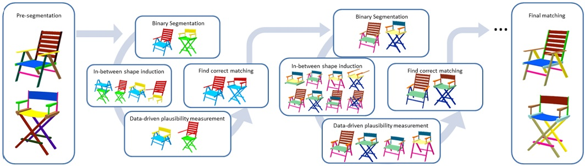
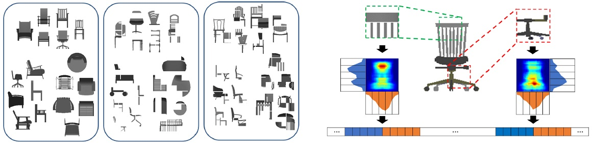
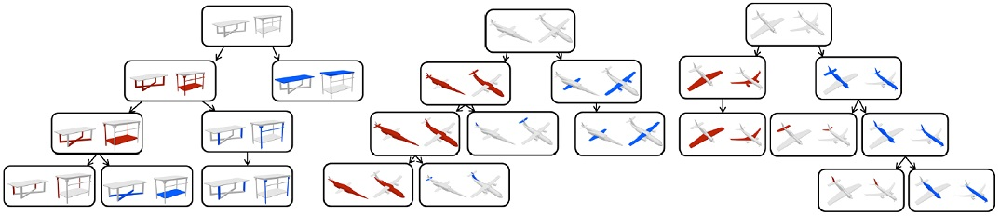
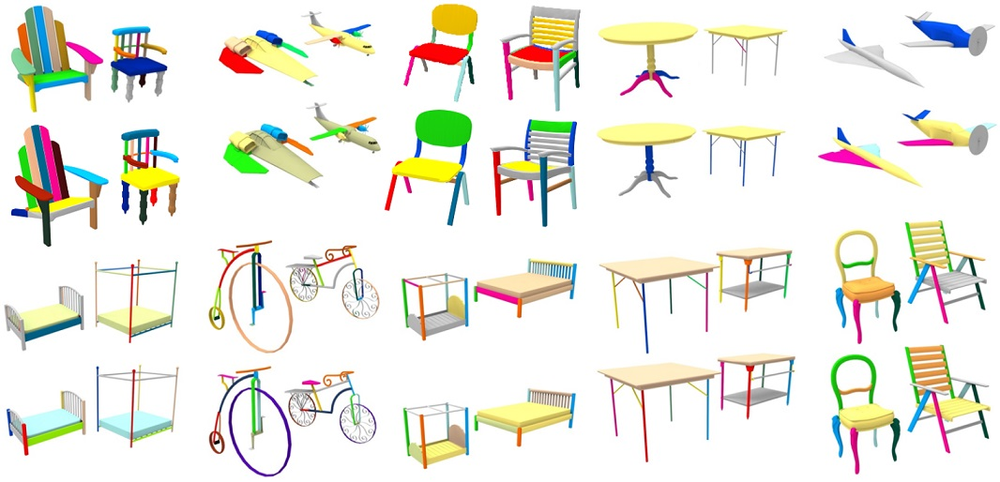

<!DOCTYPE html PUBLIC "-//W3C//DTD XHTML 1.0 Transitional//EN" "http://www.w3.org/TR/xhtml1/DTD/xhtml1-transitional.dtd">
<html xmlns="http://www.w3.org/1999/xhtml"><head>


  
  <meta http-equiv="Content-Type" content="text/html; charset=utf-8" /><title>Deformation-Driven Shape Correspondence - Kevin (Kai) Xu's Homepage</title>
  

  
  
  <link rel="shortcut icon" href="favicon.ico" type="image/x-icon" />

  
  <link href="style_pub.css" rel="stylesheet" type="text/css" />

  
  <script type="text/javascript">

  var _gaq = _gaq || [];
  _gaq.push(['_setAccount', 'UA-10108777-3']);
  _gaq.push(['_trackPageview']);

  (function() {
    var ga = document.createElement('script'); ga.type = 'text/javascript'; ga.async = true;
    ga.src = ('https:' == document.location.protocol ? 'https://ssl' : 'http://www') + '.google-analytics.com/ga.js';
    var s = document.getElementsByTagName('script')[0]; s.parentNode.insertBefore(ga, s);
  })();

  </script></head><body>
<div id="container">
<!-- header -->
<div style="font-weight: bold;" id="logo"><a href="#">Kevin (Kai) Xu's
Homepage</a></div>
<div id="menu">
<ul>
  <li style="font-weight: bold;"><a href="../index.html">Home</a></li>
  <li style="font-weight: bold;"><a href="../research.html" class="active">Research</a></li>
  <li style="font-weight: bold;"><a href="../publications.html">Publications</a></li>
  <li style="font-weight: bold;"><a href="../group.html">Group</a></li>
  <li style="font-weight: bold;"><a href="../contact.html">Contact Me</a></li>
</ul>
</div>
<!--end header -->
<!-- main -->
<div id="main">
<div id="text_top"><span style="font-weight: bold;"><br />
</span>
<br />
<br />
<table style="text-align: left; height: 50px; margin-left: 0px; width: 950px;" border="0" cellpadding="0" cellspacing="2">
  <tbody>
    <tr>
      <td style="text-align: justify; width: 944px;"><font style="color: rgb(255, 255, 214); font-family: Tahoma;" size="4"><br />
      </font>
      <div style="text-align: center;"><font style="color: rgb(255, 255, 214); font-family: Tahoma;" size="4"><span style="font-weight: bold;" /></font></div>
      <font style="color: rgb(255, 255, 214); font-family: Tahoma;" size="4"><span style="font-weight: bold;"> <br />
      </span></font>
      <div style="text-align: center;"><font style="color: rgb(255, 255, 214); font-family: Tahoma;" size="+2"><span style="font-weight: bold;"><br />
      <span style="font-family: Arial;">Deformation-Driven Shape Correspondence via Shape Recognition<br />
      </span></span></font> </div>
      <font style="color: rgb(255, 255, 214); font-family: Tahoma;" size="4"> <br />
      </font>
      <div style="text-align: center;">
        <p><br />
          <font style="color: rgb(255, 255, 214); font-family: Tahoma;" size="+1"><span style="font-family: Arial;">Chenyang Zhu<small><sup>1,2</sup></small>,&nbsp; Renjiao Yi<small><sup>1,2</sup></small>,&nbsp;
            Wallace Lira<small><sup>1</sup></small>,&nbsp;Ibraheem Alhashim<sup>1</sup>, &nbsp;Kai Xu<small><sup>2</sup></small>,&nbsp;Hao Zhang<small><sup>1</sup></small></span></font><font style="color: rgb(255, 255, 214); font-family: Tahoma;" size="+1"><span style="font-family: Arial;"><br />
          <br />
          <br />
            </span></font><big style="color: rgb(255, 255, 214);"><sup>1</sup>Simon Fraser University, &nbsp; &nbsp; <sup>2</sup>National University of Defense Technology<br />
          <br />
            </big><font style="color: rgb(255, 255, 214); font-family: Arial;" size="-0"><br />
            </font><big style="color: rgb(255, 255, 214);">ACM Transactions
              on Graphics (SIGGRAPH 2017), 36(4)</big><br />
              <font style="color: rgb(255, 255, 214); font-family: Arial;" size="-0"> <span style="font-style: italic;"><br />
            <br />
              </span></font><br />
        </p>
      </div>
      <div style="text-align: center;"></div>
      <div style="text-align: center;"><br />
      <div style="text-align: justify; margin-left: auto; margin-right:auto; width: 899px;"><big style="color: rgb(255, 255, 214);">An overview of our deformation-driven correspondence algorithm. The input consists of two pre-segmented or over-segmented 3D shapes. We
recursively split and match substructures according to a data-driven plausibility criterion that relies exclusively on shape recognition. The first iteration splits the input shapes into two sub-shapes. Given a pair of matched components, the algorithm recursively splits and matches them. Finally, aer
termination conditions are met for each substructure, we obtain a final part correspondence.</big></div>
      <br />
      <br />
      <br />
      <table style="text-align: left; width: 872px; margin-left: 34px; height: 744px;" border="0" cellpadding="2" cellspacing="2">
        <tbody>
          <tr>
            <td style="vertical-align: top; width: 99px; height: 7px;"><small>
            </small>
            <div style="text-align: right;"><small><font style="color: rgb(255, 255, 214); font-family: Arial Black;" size="+2"><small>Abstract</small></font></small></div>
            <small> </small></td>
            <td style="vertical-align: top; width: 753px; height: 7px;">
            <div style="text-align: justify; margin-left: 8px; width: 750px;">
              <p><big style="color: rgb(255, 255, 214);">Many approaches to shape comparison and recognition start by establishing
a shape correspondence. We “turn the table” and show that quality
shape correspondences can be obtained by performing many shape recognition
tasks. What is more, the method we develop computes a fine-grained,
topology-varying part correspondence between two 3D shapes where the
core evaluation mechanism only recognizes shapes globally. This is made
possible by casting the part correspondence problem in a deformation-driven
framework and relying on a data-driven “deformation energy” which rates
visual similarity between deformed shapes and models from a shape repository.
Our basic premise is that if a correspondence between two chairs (or
airplanes, bicycles, etc.) is correct, then a reasonable deformation between
the two chairs anchored on the correspondence ought to produce plausible,
“chair-like” in-between shapes.</big></p>
              <p><big style="color: rgb(255, 255, 214);">                Given two 3D shapes belonging to the same category, we perform a
                top-down, hierarchical search for part correspondences. For a candidate
                correspondence at each level of the search hierarchy, we deform one input
                shape into the other, while respecting the correspondence, and rate the
                correspondence based on how well the resulting deformed shapes resemble
                other shapes from ShapeNet belonging to the same category as the inputs.
                The resemblance, i.e., plausibility, is measured by comparing multi-view
                depth images over category-specic features learned for the various shape
                categories. We demonstrate clear improvements over state-of-the-art approaches
                through tests covering extensive sets of man-made models with
                rich geometric and topological variations.</big><br />
                <big style="color: rgb(255, 255, 214);"> </big></p>
            </div>
            </td>
          </tr>
          <tr>
            <td style="vertical-align: top; width: 99px;"><br />
            </td>
            <td style="vertical-align: top; width: 753px;"><br />
            </td>
          </tr>
          <tr>
            <td style="vertical-align: top; text-align: right; height: 134px; width: 99px;"><font style="color: rgb(255, 255, 214); font-family: Arial Black;" size="+2"><br />
            <small>Paper</small></font></td>
            <td style="vertical-align: top; height: 134px; width: 753px;">
            <table width="600" border="0" cellpadding="2" cellspacing="2" style="text-align: left; height: 235px; width: 580px;">
              <tbody>
                <tr>
                  <td height="228" style="vertical-align: top; width: 122px;">
                  <div id="main2"><a href="../papers/zhu_sig17_scsc.pdf"></a></div>
                  </td>
                  <td width="530" style="vertical-align: top; width: 408px;"><p><font style="color: rgb(255, 255, 214); font-family: Arial;" size="-0"><span style="font-weight: bold;"><br />
                    <br />
                    <br />
                    <br />
                    <br />
                    <br />
                    <br />
                    <br />
                    </span></font></p>
                    <p>&nbsp;</p>
                    <p><font style="color: rgb(255, 255, 214); font-family: Arial;" size="-0"><span style="font-weight: bold;"><br />
                      <br />
                      </span></font><font style="color: rgb(255, 255, 214);" size="3"><br />
                        <strong><a href="../papers/zhu_sig17_scsc.pdf">PDF, 30.9MB</a></strong></font><font style="color: rgb(255, 255, 214); font-family: Arial;" size="-0"></span></font><br />
                    </p>
                  </td>
                </tr>
              </tbody>
            </table>
            </td>
          </tr>
          
          
          <tr>
            <td style="vertical-align: top; height: 9px; width: 99px;"><br />
            </td>
            <td style="vertical-align: top; height: 9px; width: 753px;">&nbsp;</td>
          </tr>
          
          <tr>
            <td style="vertical-align: top; height: 392px; text-align: right; width: 99px;"><small><font style="color: rgb(255, 255, 214); font-family: Arial Black;" size="+2"><small>Images</small></font></small></td>
            <td style="vertical-align: top; height: 392px; width: 753px;"> <font style="color: rgb(255, 255, 214); font-family: Arial;" size="-0"> </font>
            <div style="text-align: center;"></div>
            <div style="text-align: center;"><br />
            <div style="text-align: justify; margin-left: 9px; width: 750px;"><big style="color: rgb(255, 255, 214);"><strong>Left: </strong>Samples of our plausibility measure training data. "Missing negative" (left-middle)
samples shows examples with patches that are not present in the shape,
while "swap negative" (left-right) shows structures that have some undesirable combination
of patches. Either negative case directly affects the visual perception
of shape implausibility. <strong>Right:</strong> Extracting a feature vector from the HOG representation of the
depth image and the mid-level patches. Feature vectors are constructed by
generating a response map using a convolution operation between patches
and depth maps. We obtain a 10-dimensional feature vector for each depth
patch by averaging five segments of the response map in the vertical and
horizontal directions. The feature vectors of all the patches of a given depth
image are then combined into one single feature vector that represents the
depth image.</big></div>
            </div>
            <font style="color: rgb(255, 255, 214); font-family: Arial;" size="-0"> <br />
            <br />
            </font> <font style="color: rgb(255, 255, 214); font-family: Arial;" size="-0"><br />
            </font>
            <div style="text-align: center;"></div>
            <font style="color: rgb(255, 255, 214); font-family: Arial;" size="-0"><br />
            </font>
            <div style="text-align: justify; margin-left: 9px; width: 750px;"><big style="color: rgb(255, 255, 214);">Some hierarchical correspondence of input shape segments obtained by our method.</big><br />
            </div>
            <font style="color: rgb(255, 255, 214); font-family: Arial;" size="-0"> <br />
            <br />
            </font> <font style="color: rgb(255, 255, 214); font-family: Arial;" size="-0"><br />
            </font>
            <div style="text-align: center;"><br />
            </div>
            <font style="color: rgb(255, 255, 214); font-family: Arial;" size="-0"><br />
            </font>
            <div style="text-align: justify; margin-left: 9px; width: 750px;"><big style="color: rgb(255, 255, 214);">A gallery of part correspondences computed by our algorithm (boom pair of each two shape pairs compared) with comparisons to GeoTopo [Alhashim
et al. 2015]. Matched parts share the same color; unmatched parts are in gray.</big></div>
            <font style="color: rgb(255, 255, 214); font-family: Arial;" size="-0"><br />
            </font>
            
            </td>
          </tr>
          <tr>
            <td style="vertical-align: top; width: 99px;"><br />
            </td>
            <td style="vertical-align: top; width: 753px;"><br />
            <br />
            </td>
          </tr>
          <tr>
            <td style="vertical-align: top; text-align: right; width: 99px;"><small><font style="color: rgb(255, 255, 214); font-family: Arial Black;" size="+2"><small>Thanks</small></font></small></td>
            <td style="vertical-align: top; text-align: justify; width: 753px;"><big style="color: rgb(255, 255, 214);"> </big>
            <div style="text-align: justify; margin-left: 8px; width: 750px;"><big style="color: rgb(255, 255, 214);">We would like to thank the reviewers for their valuable comments
and feedback. We also thank Noa Fish and Oliver van Kaick for
fruitful discussions. This work is supported in part by grants from
NSERC Canada (611770), China Scholarship Council, and NSF China
(61572507, 61532003, 61622212).</big></div>
            <big style="color: rgb(255, 255, 214);"> </big></td>
          </tr>
          <tr>
            <td style="vertical-align: top; width: 99px;"><br />
            </td>
            <td style="vertical-align: top; width: 753px;"><br />
            <br />
            </td>
          </tr>
          <tr>
            <td style="vertical-align: top; text-align: right; width: 99px;"><p><small><font style="color: rgb(255, 255, 214); font-family: Arial Black;" size="+2"><small><a name="code">Code<br>Data</a></small></font></small></p></td>
            <td style="vertical-align: top; text-align: justify; width: 753px;"><big style="color: rgb(255, 255, 214);"> </big>
            <div style="text-align: justify; margin-left: 8px; width: 750px;"><big style="color: rgb(255, 255, 214);">Demo <a href="http://www.sfu.ca/~cza68/code&demo/SCSRDemo.rar" target="_blank">code</a> with dataset.<br />
            <br />
            </big></div>
            <big style="color: rgb(255, 255, 214);"> </big></td>
          </tr>
          <tr>
            <td style="vertical-align: top; width: 99px;"><br />
            </td>
            <td style="vertical-align: top; width: 753px;"><br /></td>
          </tr>
          
          <tr>
            <td style="vertical-align: top; text-align: right; width: 99px;"><small><font style="color: rgb(255, 255, 214); font-family: Arial Black;" size="+2"><small>Bibtex</small></font></small></td>
            <td style="vertical-align: top; width: 753px;"><font style="color: rgb(255, 255, 214); font-family: Arial;" size="-1"> </font>
            <div style="text-align: left; margin-left: 6px; width: 730px;"><font style="color: rgb(255, 255, 214); font-family: Arial;" size="-1"><font style="color: rgb(255, 255, 214); font-family: Arial;" size="-1">@article
{zhu_sig17,<br />
&nbsp;&nbsp;&nbsp; title = {Deformation-Driven Shape Correspondence via Shape Recognition},<br />
            &nbsp;&nbsp;&nbsp;
            author
= {Chenyang Zhu and Renjiao Yi and Wallace Lira and Ibraheem Alhashim and Kai Xu and Hao Zhang},<br />
            &nbsp;&nbsp;&nbsp;
            journal
= {ACM Transactions on Graphics (Proc. of SIGGRAPH 2017)},<br />
            &nbsp;&nbsp;&nbsp;
            volume
= {36},<br />
            &nbsp;&nbsp;&nbsp;
            number
= {4},<br />
            &nbsp;&nbsp;&nbsp;
            pages
= {to appear},<br />
            &nbsp;&nbsp;&nbsp;
            </font><font style="color: rgb(255, 255, 214); font-family: Arial;" size="-1">year
= {2017}<br />
}</font></font></div>
            <font style="color: rgb(255, 255, 214); font-family: Arial;" size="-1"> </font></td>
          </tr>
        </tbody>
      </table>
      <br />
      <br />
      <br />
      <br />
      <div id="main2" style="text-align: center;"><a target="_blank" href="http://www.sfu.ca/"></a><a target="_blank" href="http://english.siat.cas.cn/"></a></div>
      <br />
      <br />
      <ul>
      </ul>
      <div style="text-align: center;"><a href="http://english.nudt.edu.cn/"> </a></div>
      <ul style="text-align: center;">
        <a href="http://english.nudt.edu.cn/"><font style="color: rgb(255, 255, 214); font-family: Tahoma;" size="+2"><span style="font-family: Arial;" /></font></a><a href="#menu"></a><a href="../index.html"></a><font style="color: rgb(255, 255, 214); font-family: Tahoma;" size="+2"> </font>
      </ul>
      <font style="color: rgb(255, 255, 214); font-family: Tahoma;" size="+2">&nbsp; </font></td>
    </tr>
  </tbody>
</table>
<b><br />
</b> </div>
</div>
<!-- end main -->
<!-- footer -->
<div id="footer">
<div id="footer_left">© Copyright 2011 Kevin (Kai) Xu<br />
</div>
<div id="footer_right">Latest update: 2014-03-29 &nbsp; <small><a href="http://www.realitysoftware.ca/services/website-development/design/">Web
design</a> released by <a href="http://www.flash-gallery.org/">Flash
Gallery</a></small> </div>
</div>
<!-- end footer --> </div>

</body></html>